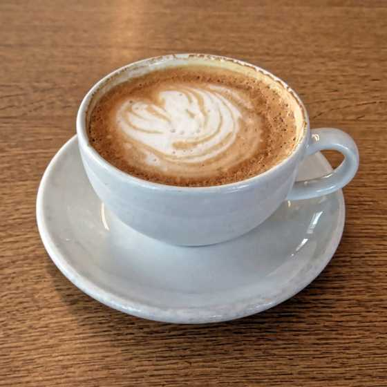
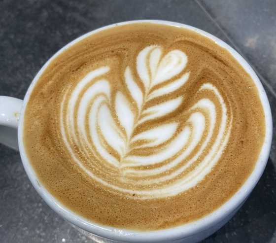
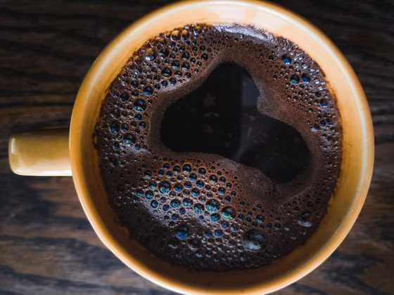
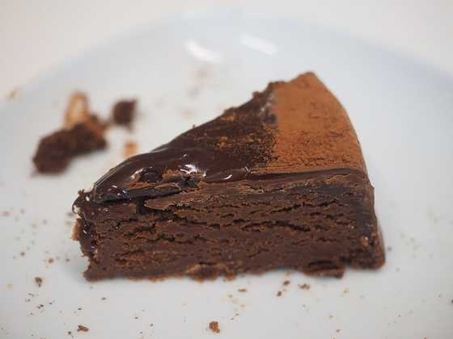
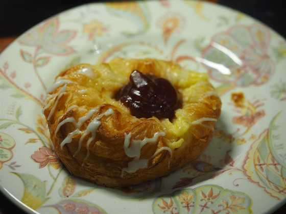
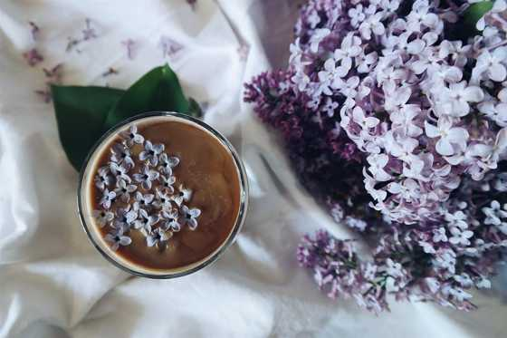
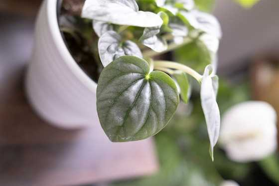
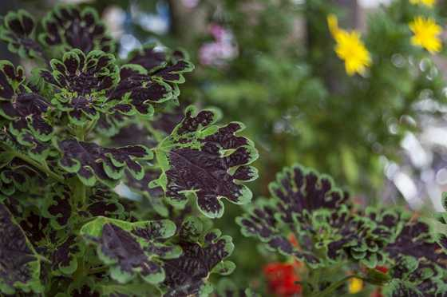
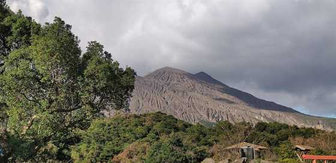

奄美市名瀬・鳩浜町のカフェ
ポッポビーチカフェ
コンセプトは「みんなのリビング」。ふらりと立ち寄って、くつろげる場所。
お店のこと
みんなのリビングのようなカフェ
Instagramの紹介によると、ポッポビーチカフェは奄美市名瀬の鳩浜町にあるカフェで、コンセプトは「みんなのリビング」です。乾燥機専門のコインランドリーが併設されているほか、和室とキッズスペース(要予約)、Wi-Fi、駐車場(5台)があると紹介されています。マルシェ、ワークショップ、ライブ、古着コーナーなどのイベントの投稿も見られます。
情報源: Instagram @ppb_cafe2020(店名の意味などは確認できていないため記載していません。見出しの言い回しは制作側の表現です)
このページの写真は、雰囲気をお伝えするフリー素材のイメージです。店舗の実際の様子や提供内容ではありません。












口コミ
こんな声が届きそうです(イメージ例)
以下は制作側が作った創作のイメージで、実在のお客様の声ではありません。
イメージ例
ほっとできる場所
コーヒーを飲みながら、ゆっくり過ごせました。家のリビングみたいで、つい長居してしまいそうです。
イメージ例
子ども連れでも安心
お昼どきに寄ってみました。ゆるやかな空気で、気を遣わずに過ごせるのがうれしかったです。
イメージ例
また立ち寄りたい
散歩のついでに立ち寄りました。甘いものと飲み物で一息つけて、ちょっとした気分転換になりました。
写真クレジット
使用写真について
- images/hero-cup.jpg「白いカップのカフェラテ」 作者: Acabashi / CC BY-SA 4.0(Wikimedia Commons)
- images/latte-art.jpg「ラテアートのカップ」 作者: Maxstein5 / CC BY-SA 4.0(Wikimedia Commons)
- images/yellow-cup.jpg「黄色いカップ」 作者: Ivan Radic / CC BY 2.0(Wikimedia Commons)
- images/drip-cup.jpg「小さなクッキーを添えたコーヒー」 作者: Melsj / CC BY-SA 4.0(Wikimedia Commons)
- images/cake.jpg「ケーキ」 作者: JIP / CC BY-SA 4.0(Wikimedia Commons)
- images/pastry.jpg「焼き菓子」 作者: JIP / CC BY-SA 4.0(Wikimedia Commons)
- images/glass-latte.jpg「グラスのラテ」 作者: Artem Beliaikin / CC BY 2.0(Wikimedia Commons)
- images/espresso.jpg「エスプレッソ」 作者: Jubair1985 / CC0(Wikimedia Commons)
- images/lilac-cup.jpg「ライラック色のカップ」 作者: Brigitte Tohm / CC0(Wikimedia Commons)
- images/houseplant.jpg「窓辺の観葉植物」 作者: Greg Weaver / CC0(Wikimedia Commons)
- images/leaf.jpg「葉っぱ」 作者: Plantmomcare / CC BY-SA 4.0(Wikimedia Commons)
- images/leaves-yakushima.jpg「南国の森の葉」 作者: jillllybean / CC BY-SA 2.0(Wikimedia Commons)
- images/mountain.jpg「山の風景」 作者: Drivephotographer / CC0(Wikimedia Commons)